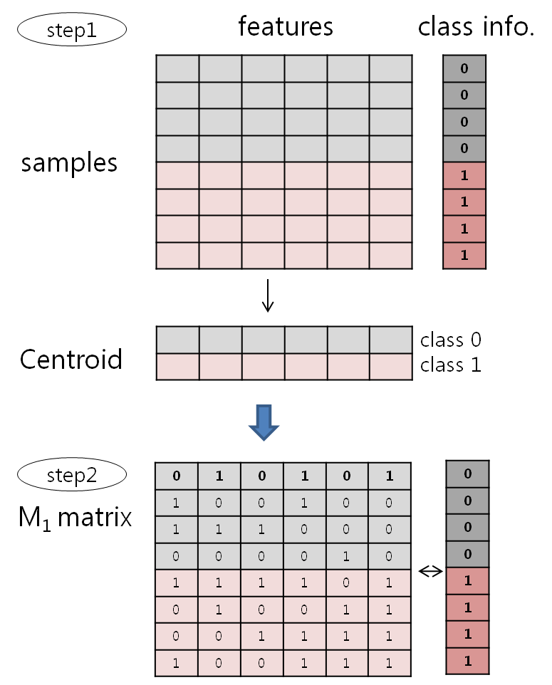

|
1. Introduction
The goal of f eature selection is to select useful features and simultaneously exclude garbage
features from a given dataset for classification purposes. This is expected to bring reduction
of processing time and improvement of classification accuracy. In this study, we devised a new
feature selection algorithm (CBFS) based on clearness of features. Feature clearness expresses
separability among classes in a feature. Highly clear features contribute towards obtaining high
classification accuracy. CScore is a measure to score clearness of each feature and is based on
clustered samples to centroid of classes in a feature. From the experiment we confirm that CBFS
is more excellent than up-to-date feature selection algorithms including FeaLect . We also
suggest combining CBFS and other algorithms to improve classification accuracy. CBFS can be
applied to microarray gene selection, text categorization, and image classification.

2. Supplementary Materials
Click here
to see the algorithms: CScore, CBFSinteraction, CBFSexact, and
R-value.
3. Usage
More informations are included in information.txt about input data & output data
format.
how to excute the program for making new dataset
1. Download the CBFS.zip file.
2. This file has *.class, information.txt, Training_duke.csv, and Run.bat
included.
3-1 How to use this program?
First, Open the information file. This file have a input-file name.
Second, save the information file.
Finally, after save the information.txt file, excute the Run.bat at the
("cmd.exe", windows command line)
we can get a feature list in perfect descending order
4. Download
CBFS.zip
The CBFS.zip file contents:
Class File
- CBFSorg.class
Executable File
- run.bat
Input File
- information.txt
5. Reference
(to be added)
|